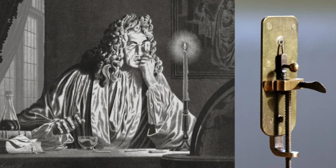
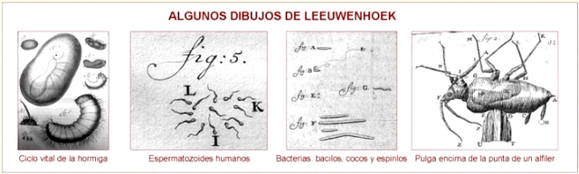

Antonie van Leeuwenhoek nació el 24 de octubre de 1632 en Delft, Países Bajos. Fue hijo de Philips Antonisz van Leeuwenhoek, quien trabajaba como fabricante de canastas, y Margaretha Bel van den Berch. Desde joven no recibió una educación universitaria formal ni estudió latín, lo cual era poco común para un científico de su época. Trabajó como comerciante de telas, y fue precisamente en este oficio donde comenzó a interesarse por el uso de lentes de aumento para observar los tejidos con mayor detalle.
Con el tiempo, Leeuwenhoek aprendió a fabricar sus propios microscopios, que eran más potentes que los existentes en su época. Utilizando estos instrumentos, comenzó a observar objetos muy pequeños que nunca antes habían sido vistos. Fue la primera persona en observar y describir microorganismos, como bacterias y protozoarios, a los que llamó “animálculos”. También fue el primero en observar células sanguíneas, espermatozoides, fibras musculares y estructuras microscópicas de plantas e insectos.
Leeuwenhoek envió sus descubrimientos a la Royal Society de Londres, una importante institución científica, donde al principio sus observaciones causaron sorpresa y duda. Sin embargo, con el tiempo, otros científicos confirmaron sus descubrimientos y su trabajo fue reconocido como revolucionario. Gracias a sus observaciones, es considerado el padre de la microbiología, ya que abrió el camino para el estudio de los seres vivos microscópicos.
A lo largo de su vida construyó más de 500 microscopios y realizó numerosas observaciones científicas. Aunque no era matemático ni médico profesional, su curiosidad y dedicación lo convirtieron en uno de los científicos más importantes del siglo XVII.
Antonie van Leeuwenhoek falleció el 26 de agosto de 1723 en Delft, Países Bajos, a los 90 años. Hoy es recordado como uno de los pioneros más importantes en la historia de la ciencia, por haber descubierto un mundo invisible que cambió completamente la comprensión de la vida.